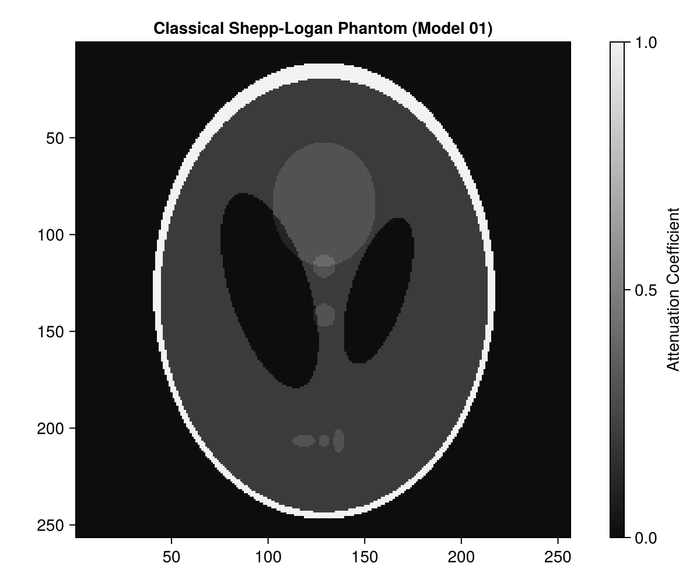
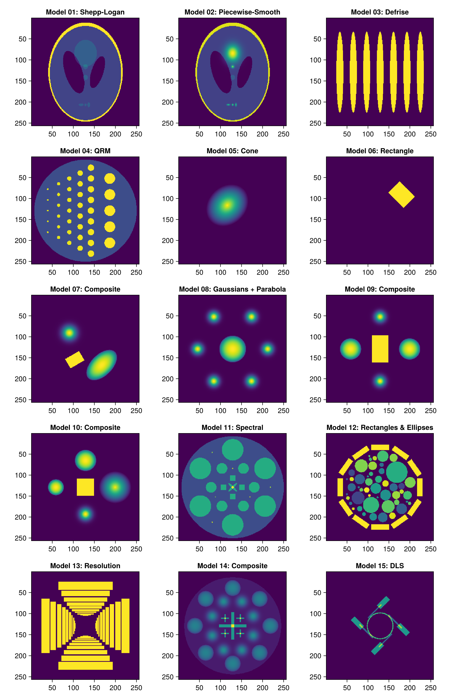
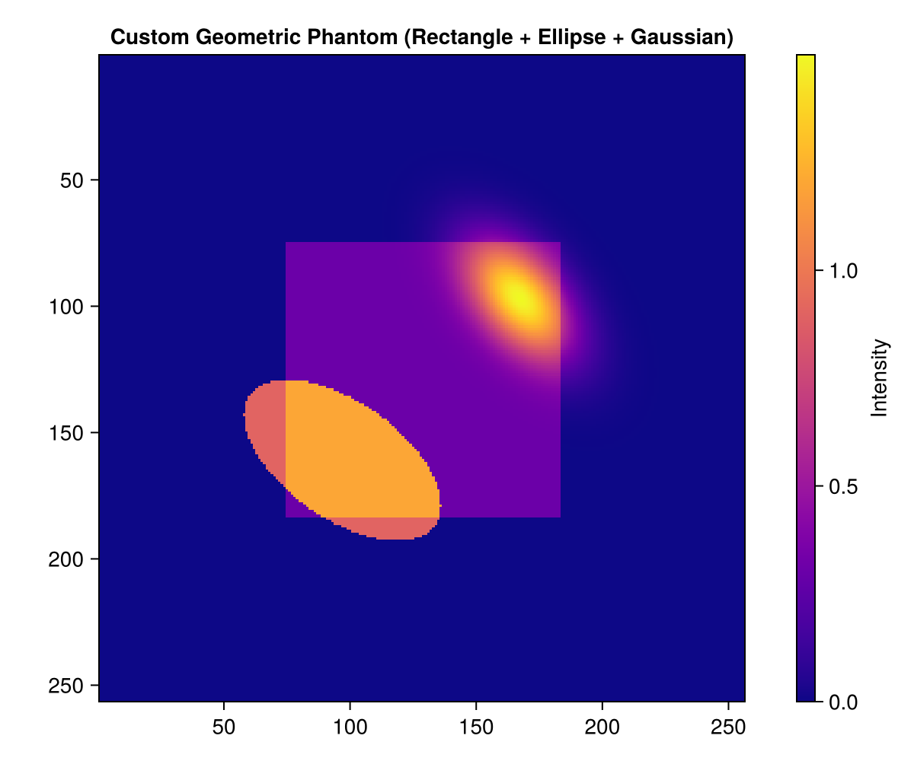
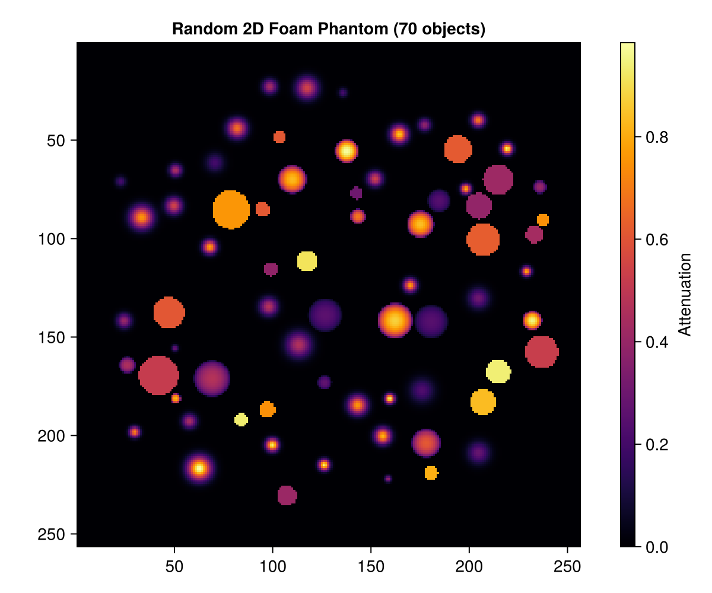
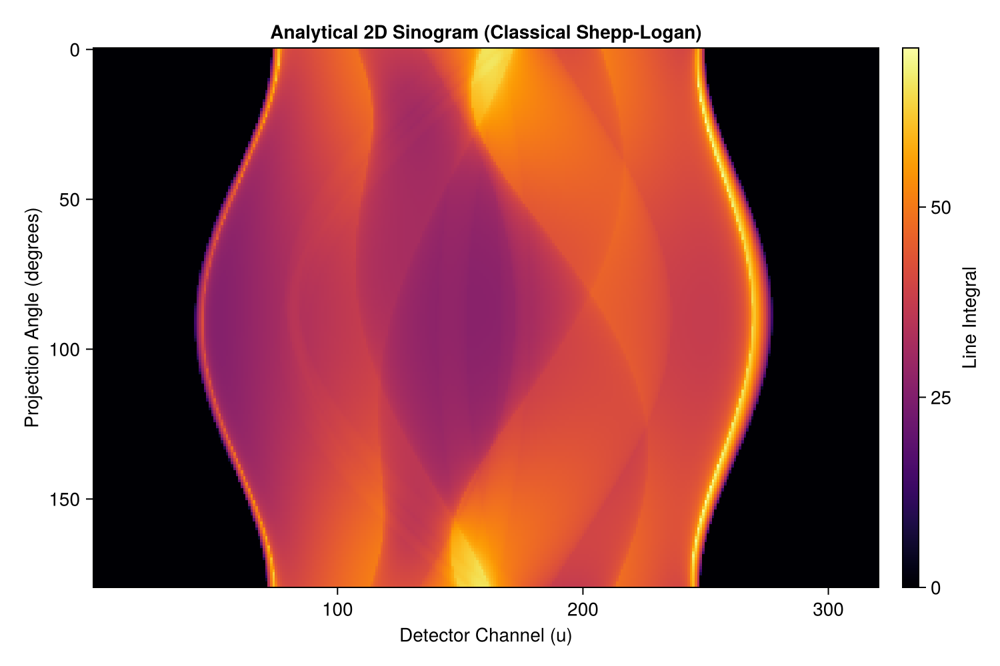
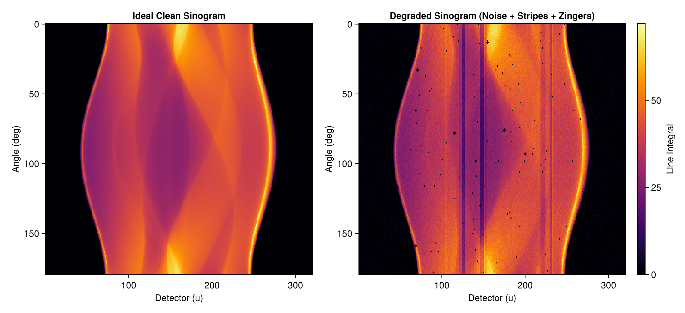
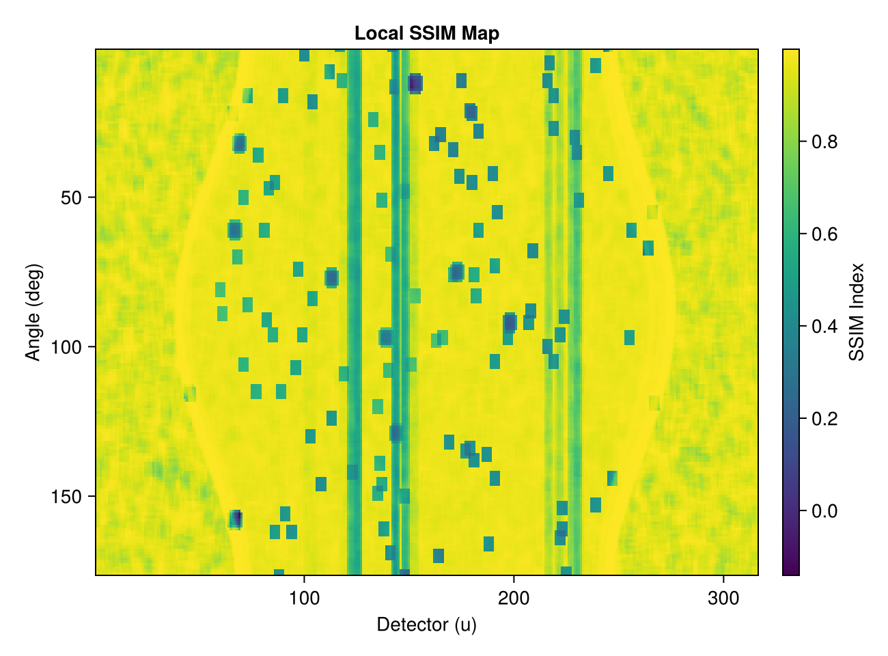

TomoPhantom.jl: 2D Demo & Tutorial
This notebook demonstrates the 2D capabilities of TomoPhantom.jl, a native Julia port of TomoPhantom. It provides tools for generating analytical phantoms and their Radon transforms (sinograms) for benchmarking tomographic reconstruction algorithms.
Overview
- Standard 2D Library Phantoms (
phantom2d,LibraryModel,NativeCore) - Comparison of all 15 Library Models in a 3-column layout
- Custom Phantom Construction via Geometric Primitives (
ObjectSpec2D,object2d) - Random Cellular/Foam Phantom Generation (
foam2D) - Analytical Forward Projections (Sinogram Generation) (
SinoGeom2D,sino2d_natural,sino2d_u_angle_view) - Simulating Realistic Artefacts and Noise (
noise,stripes,zingers,artefacts_mix) - Quantitative Quality Metrics (
QualityTools,rmse,ssim)
Prerequisites
This tutorial uses Makie (recommended backend: CairoMakie) for visualization. If CairoMakie is not installed in your environment, add it by running using Pkg; Pkg.add("CairoMakie").
0. Environment Setup and Package Loading
Load TomoPhantom.jl and CairoMakie.
using TomoPhantom
using CairoMakie1. Generating Standard 2D Library Phantoms (phantom2d)
TomoPhantom.jl includes a comprehensive library of benchmark digital phantoms defined in Phantom2DLibrary.dat.
Key Types and Functions
NativeCore():- Context struct wrapping dynamic library pointers to the compiled C core (
libtomophantom). Reusing this instance avoids repeateddlopenoverhead across function calls.
- Context struct wrapping dynamic library pointers to the compiled C core (
default_2d_library_path():- Returns the absolute filesystem path to
Phantom2DLibrary.datconfigured at package build time.
- Returns the absolute filesystem path to
LibraryModel(id, path):- Associates an integer model index
idwith the.datlibrary file (e.g., ID1corresponds to the Classical Shepp-Logan phantom).
- Associates an integer model index
phantom2d(core, model, n):- Renders the specified model onto an $n \times n$ Cartesian grid, returning a native
Array{Float32, 2}.
- Renders the specified model onto an $n \times n$ Cartesian grid, returning a native
# Initialize the native core context
core = NativeCore()
# Locate the compiled 2D model library file
lib_path = default_2d_library_path()
# Model 01: Classical Shepp-Logan phantom
model_shepp = LibraryModel(1, lib_path)
# Render on a 256 x 256 Cartesian grid
N = 256
phantom_shepp = phantom2d(core, model_shepp, N)
println("Array type: ", typeof(phantom_shepp))
println("Grid dimensions: ", size(phantom_shepp))
println("Intensity range: [", minimum(phantom_shepp), ", ", maximum(phantom_shepp), "]")Array type: Matrix{Float32}
Grid dimensions: (256, 256)
Intensity range: [-1.4901161e-8, 1.0]Visualizing the Phantom with Makie
We display the phantom using Makie's heatmap!. With aspect = DataAspect(), the 1:1 pixel aspect ratio is preserved.
fig1 = Figure(size = (600, 500))
ax1 = Axis(fig1[1, 1],
title = "Classical Shepp-Logan Phantom (Model 01)",
aspect = DataAspect(),
yreversed = true)
hm1 = heatmap!(ax1, phantom_shepp, colormap = :grays)
Colorbar(fig1[1, 2], hm1, label = "Attenuation Coefficient")
fig1
Comparison of All 15 Stationary Library Models
Phantom2DLibrary.dat defines 15 distinct stationary 2D phantoms for various benchmarking scenarios:
- Model 01: Classical Shepp-Logan (standard CT benchmark)
- Model 02: Piecewise-Smooth Shepp-Logan (smooth gradient regions)
- Model 03: Defrise Phantom (spatial resolution evaluation using vertical bars)
- Model 04: QRM Phantom (geometric accuracy & resolution evaluation)
- Model 05: Cone primitive
- Model 06: Rectangle primitive
- Model 07: Composite geometric phantom
- Model 08: Composite phantom (Gaussians + Parabola)
- Model 09: Composite geometric structure
- Model 10: Composite geometric structure
- Model 11: Spectral Phantom (multi-energy / spectral CT benchmark)
- Model 12: Rectangles and Ellipses composite
- Model 13: Resolution Phantom (fine rectangular test targets)
- Model 14: Composite geometric phantom
- Model 15: DLS Phantom (designed by Diamond Light Source synchrotron)
# Titles for all 15 stationary 2D library models
model_titles = [
"Model 01: Shepp-Logan",
"Model 02: Piecewise-Smooth",
"Model 03: Defrise",
"Model 04: QRM",
"Model 05: Cone",
"Model 06: Rectangle",
"Model 07: Composite",
"Model 08: Gaussians + Parabola",
"Model 09: Composite",
"Model 10: Composite",
"Model 11: Spectral",
"Model 12: Rectangles & Ellipses",
"Model 13: Resolution",
"Model 14: Composite",
"Model 15: DLS"
]
# Render and display all 15 models in a 3-column × 5-row grid layout
fig2 = Figure(size = (900, 1400))
for id in 1:15
m = LibraryModel(id, lib_path)
p = phantom2d(core, m, N)
r = (id - 1) ÷ 3 + 1
c = (id - 1) % 3 + 1
ax = Axis(fig2[r, c], title = model_titles[id], aspect = DataAspect(), yreversed = true)
heatmap!(ax, p, colormap = :viridis)
end
fig2
2. Custom Phantom Construction via Geometric Primitives (ObjectSpec2D, object2d)
Beyond predefined libraries, custom phantoms can be analytically built by assembling geometric primitives such as ellipses, rectangles, parabolas, and Gaussian distributions.
Key Types and Functions
ObjectSpec2D(; object, C0, x0, y0, a, b, phi_rot, tt):- Parametric specification of an analytical 2D primitive.
object: Primitive type ("gaussian","ellipse","rectangle","parabola", etc.)C0: Peak/base intensity (attenuation coefficient)x0, y0: Center coordinates in the normalized range $[-1.0, 1.0]$a, b: Semi-axis widths along principal coordinatesphi_rot: Rotation angle in degreestt: Sub-iteration threshold for temporal objects (0 for static)
object2d(core, n, spec):- Rasterizes a single
ObjectSpec2Donto an $n \times n$ grid.
- Rasterizes a single
# 1. Background rectangular container
spec_bg = ObjectSpec2D(
object = "rectangle",
C0 = 0.3f0,
x0 = 0.0f0, y0 = 0.0f0,
a = 0.85f0, b = 0.85f0,
phi_rot = 0.0f0
)
# 2. Angled elliptical feature
spec_ellipse = ObjectSpec2D(
object = "ellipse",
C0 = 0.9f0,
x0 = -0.25f0, y0 = 0.25f0,
a = 0.35f0, b = 0.18f0,
phi_rot = 35.0f0
)
# 3. Smooth Gaussian peak
spec_gauss = ObjectSpec2D(
object = "gaussian",
C0 = 1.2f0,
x0 = 0.3f0, y0 = -0.25f0,
a = 0.2f0, b = 0.35f0,
phi_rot = -40.0f0
)
# Rasterize each primitive and combine additively
phantom_custom = object2d(core, N, spec_bg) .+
object2d(core, N, spec_ellipse) .+
object2d(core, N, spec_gauss)
# Visualize
fig3 = Figure(size = (600, 500))
ax3 = Axis(fig3[1, 1],
title = "Custom Geometric Phantom (Rectangle + Ellipse + Gaussian)",
aspect = DataAspect(),
yreversed = true)
hm3 = heatmap!(ax3, phantom_custom, colormap = :plasma)
Colorbar(fig3[1, 2], hm3, label = "Intensity")
fig3
3. Random Cellular/Foam Phantom Generation (foam2D)
For modeling porous materials (foams, trabecular bone, aerogels), foam2D packs non-overlapping random spherical or ellipsoidal objects into continuous space.
Function Parameters
foam2D(x0min, x0max, y0min, y0max, c0min, c0max, ab_min, ab_max, n, tot_objects, object_type; core, rng):x0min, x0max, y0min, y0max: Spatial bounds for object centroidsc0min, c0max: Intensity rangeab_min, ab_max: Object radius rangen: Grid dimension ($n \times n$)tot_objects: Total number of objects to insertobject_type: Object primitive ("ellipse","parabola","gaussian", or"mix")- Returns
(phantom, objects): the composite 2D array and aVector{ObjectSpec2D}.
# Generate a 2D foam phantom containing 70 non-overlapping mixed objects
phantom_foam, foam_specs = foam2D(
-0.85, 0.85, # x-coordinate range
-0.85, 0.85, # y-coordinate range
0.2, 1.0, # intensity range
0.02, 0.08, # radius range
N, # resolution (N x N)
70, # number of objects
"mix"; # mixed primitive types
core = core
)
println("Successfully generated objects: ", length(foam_specs))
# Visualize
fig4 = Figure(size = (600, 500))
ax4 = Axis(fig4[1, 1],
title = "Random 2D Foam Phantom (70 objects)",
aspect = DataAspect(),
yreversed = true)
hm4 = heatmap!(ax4, phantom_foam, colormap = :inferno)
Colorbar(fig4[1, 2], hm4, label = "Attenuation")
fig4
4. Analytical Forward Projections / Sinograms (SinoGeom2D, sino2d_natural)
Computing forward projections by numerical line integration on a pixel grid can introduce discretization artifacts ("inverse crime"). A key feature of TomoPhantom is its ability to compute exact analytical line integrals directly from geometric specifications.
Key Types and Functions
SinoGeom2D(phantom_size, detector_u, angles_deg):- Defines a parallel-beam acquisition geometry.
phantom_size: Reference grid resolutiondetector_u: Number of detector channelsangles_deg: Vector of projection angles in degrees (Vector{Float32})
sino2d_natural(core, model, geom; centype=0):- Evaluates exact analytical projections, returning an
Array{Float32, 2}of dimensions[angle, detector_u].
- Evaluates exact analytical projections, returning an
sino2d_u_angle_view(sino):- Returns a zero-copy transpose view with dimensions
[detector_u, angle], matching standard reconstruction toolkits such as ASTRA or ODL.
- Returns a zero-copy transpose view with dimensions
# Projection geometry: 180 angles evenly spaced from 0° to 179°, 320 detector channels
angles = collect(Float32, range(0.0f0, 179.0f0; length = 180))
detector_channels = 320
geom = SinoGeom2D(N, detector_channels, angles)
# Calculate analytical sinogram for the Shepp-Logan model
sino_shepp = sino2d_natural(core, model_shepp, geom)
println("Sinogram dimensions (angles × detector_u): ", size(sino_shepp))
# Obtain transposed view [detector_u, angles] for plotting
sino_view = sino2d_u_angle_view(sino_shepp)
fig5 = Figure(size = (750, 500))
ax5 = Axis(fig5[1, 1],
title = "Analytical 2D Sinogram (Classical Shepp-Logan)",
xlabel = "Detector Channel (u)",
ylabel = "Projection Angle (degrees)",
yreversed = true
)
# x-axis: detector channels 1:detector_channels, y-axis: angles geom.angles_deg
hm5 = heatmap!(ax5, 1:detector_channels, geom.angles_deg, sino_view, colormap = :inferno)
Colorbar(fig5[1, 2], hm5, label = "Line Integral")
fig5
5. Simulating Realistic Artefacts and Noise (artefacts_mix, noise, stripes, zingers)
Real CT data suffers from photon noise, electronic noise, detector sensitivity variations (stripes/rings), and outlier spikes (zingers). TomoPhantom.jl provides dedicated artefact simulation functions to emulate these imperfections.
Key Artefact Functions
noise(data, sigma, noisetype; seed, prelog):- Adds
"Gaussian"or"Poisson"noise.
- Adds
stripes(data, percentage, maxthickness, intensity_thresh, stripe_type, variability):- Injects detector stripe artifacts (causing ring artefacts in reconstructed images).
zingers(data, percentage, modulus):- Simulates high-intensity outlier spikes from cosmic rays or direct X-ray hits.
artefacts_mix(data; ...):- Applies a comprehensive pipeline of artefacts (noise, stripes, zingers, partial volume effect, Fresnel propagation, shifts) in a single call.
# Apply a combination of artefacts: Gaussian noise, ring-causing stripes, and zingers
sino_degraded = artefacts_mix(
sino_shepp;
noise_type = "Gaussian",
noise_amplitude = 0.02, # Gaussian noise standard deviation
stripes_percentage = 4.0, # Percentage of detector elements affected by stripes (%)
stripes_intensity = 0.25, # Stripe intensity multiplier
stripes_maxthickness = 2, # Maximum stripe width (pixels)
zingers_percentage = 0.3, # Percentage of zinger outliers (%)
zingers_modulus = 10, # Cluster modulus for zingers
noise_seed = 123 # Random seed for reproducibility
)
# Side-by-side comparison of clean vs degraded sinograms
fig6 = Figure(size = (1050, 480))
ax6_1 = Axis(fig6[1, 1],
title = "Ideal Clean Sinogram",
xlabel = "Detector (u)",
ylabel = "Angle (deg)",
yreversed = true)
heatmap!(ax6_1, 1:detector_channels, geom.angles_deg, sino2d_u_angle_view(sino_shepp), colormap = :inferno)
ax6_2 = Axis(fig6[1, 2],
title = "Degraded Sinogram (Noise + Stripes + Zingers)",
xlabel = "Detector (u)",
ylabel = "Angle (deg)",
yreversed = true)
hm6_2 = heatmap!(ax6_2, 1:detector_channels, geom.angles_deg, sino2d_u_angle_view(sino_degraded), colormap = :inferno)
Colorbar(fig6[1, 3], hm6_2, label = "Line Integral")
fig6
6. Quantitative Quality Metrics (QualityTools, rmse, ssim)
TomoPhantom.jl includes standard image quality metrics for evaluating denoising or reconstruction performance against reference ground truths.
Key Functions
QualityTools(reference, reconstructed):- Holds a pair of reference and evaluated arrays.
rmse(qt)/nrmse(qt):- Root Mean Squared Error / Normalized RMSE.
ssim(reference, target, window):- Structural Similarity Index (SSIM). Returns
(mean_ssim, ssim_map).
- Structural Similarity Index (SSIM). Returns
# Compare the ideal sinogram against the corrupted version
qt = QualityTools(sino_shepp, sino_degraded)
val_rmse = rmse(qt)
val_nrmse = nrmse(qt)
# Compute SSIM using a 5x5 averaging window
win = ones(Float32, 5, 5)
mssim_val, ssim_map = ssim(sino_shepp, sino_degraded, win)
println("Root Mean Squared Error (RMSE): ", round(val_rmse, digits = 5))
println("Normalized RMSE (NRMSE): ", round(val_nrmse, digits = 5))
println("Mean SSIM: ", round(mssim_val, digits = 5))
# Visualize the spatial SSIM map
fig7 = Figure(size = (650, 480))
ax7 = Axis(fig7[1, 1],
title = "Local SSIM Map",
xlabel = "Detector (u)",
ylabel = "Angle (deg)",
yreversed = true)
hm7 = heatmap!(ax7, sino2d_u_angle_view(ssim_map), colormap = :viridis)
Colorbar(fig7[1, 2], hm7, label = "SSIM Index")
fig7
Summary
In this notebook, we demonstrated key 2D workflows in TomoPhantom.jl:
phantom2d: Rapid rendering of 15 standard library benchmark phantomsobject2d&ObjectSpec2D: Constructing bespoke phantoms from analytical geometric primitivesfoam2D: Automatic generation of cellular / porous random mediasino2d_natural&SinoGeom2D: Inverse-crime-free analytical sinogram generationsino2d_u_angle_view: Zero-cost transposed views for seamless integration with external reconstruction toolkitsartefacts_mix: Emulating realistic acquisition physics (noise, stripes, zingers, etc.)QualityTools,rmse,ssim: Quantitative benchmarking metricsCairoMakie: High-quality publication-ready 2D visualizations
For 3D volumetric phantoms, temporal (4D) simulations, and flat-field synthesis, refer to demo_3d.ipynb, demo_temporal_4d.ipynb, demo_flats_and_normalization.ipynb, and the official documentation.
This page was generated using Literate.jl.